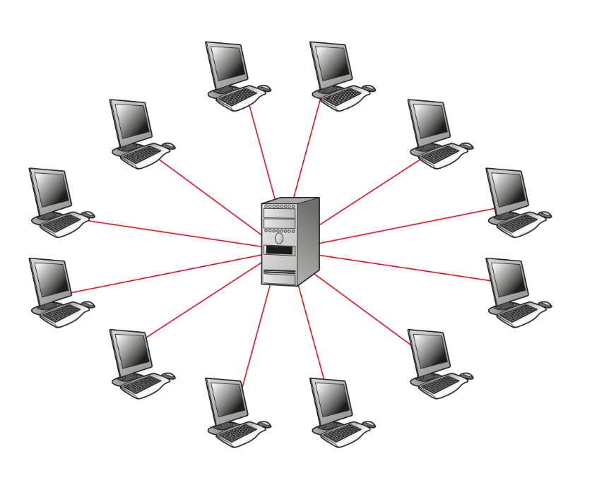
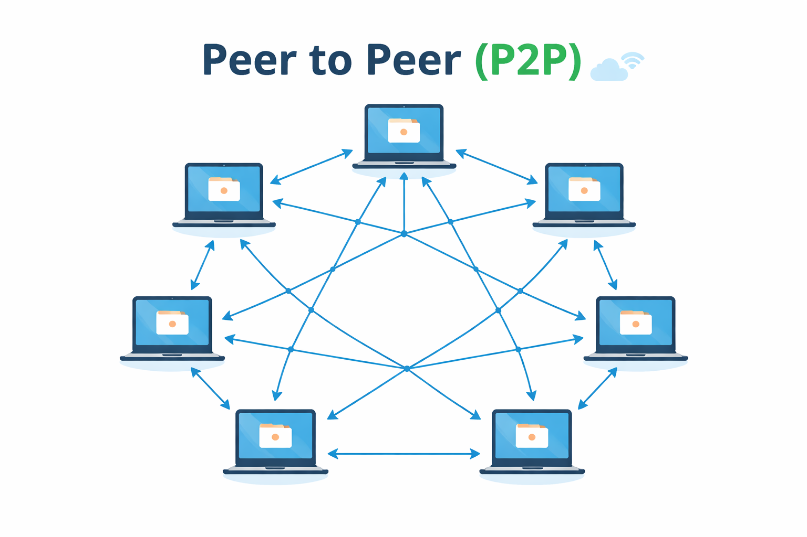

Oltre il download: la rivoluzione della rete decentralizzata
A differenza della navigazione web tradizionale, dove il tuo browser (Client) richiede dati a un potente computer remoto (Server), nel mondo P2P la comunicazione avviene direttamente tra gli utenti finali. Questa struttura trasforma ogni computer collegato in una parte integrante dell'infrastruttura stessa.

Architettura Centralizzata - Tutti i client si connettono a un server centrale che gestisce tutte le richieste e le risposte. Il server è il punto unico di controllo e distribuzione dei dati.

Architettura Decentralizzata - Tutti i nodi comunicano direttamente tra loro senza server centrale. Ogni nodo funge sia da client che da server, condividendo risorse direttamente.
Non tutte le reti P2P sono uguali. Si evolvono in base a come i nodi si scambiano le informazioni:
Completamente decentralizzato. Non esiste alcun server. Gli utenti devono trovarsi l'un l'altro attraverso messaggi di "broadcast". È il modello più libero ma più difficile da gestire tecnicamente (es. Gnutella).
Esistono dei "Supernodi" o server centrali che tengono traccia di dove si trovano i file, ma lo scambio vero e proprio avviene tra utenti. È molto veloce nella ricerca (es. il vecchio Napster o eMule).
Spesso associamo il P2P solo alla pirateria, ma oggi è la base di tecnologie fondamentali:
Ideale per servizi che richiedono controllo centralizzato e sicurezza garantita (es. Online Banking, Email). La gestione è centralizzata ma può rappresentare un singolo punto di fallimento.
Ideale per la condivisione di grandi volumi di dati e per sistemi che devono resistere a censure o guasti massivi. Più decentralizzato ma può essere più complesso da gestire.